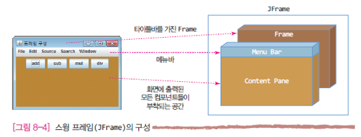

GUI 프로그램은 이미지나 도형을
다루는 클래스와 이벤트 처리를 위한 클래스를 사 용하기
때문에, 다음 import 문이 함께 필요한 경우가 많다.
import java.awt.*; // 그래픽 처리를 위한 클래스들의 경로명 import java.awt.event.*; // AWT 이벤트 사용을 위한 경로명 import javax.swing.*; // 스윙 컴포넌트 클래스들의 경로명 import javax.swing.event.*; // 스윙 이벤트를 위한 경로명
스윙 프레임과 컨텐트팬
스윙 프레임은 모든 스윙 컴포넌트들을 담는 최상위 컨테이너(Top Level Container)
이다. 프레임이 출력될 때, 프레임 내에 부착된 모든 컴포넌트들이 화면에 출력된다.
컴포넌트들은 프레임 없이 독립적으로 화면에 출력될 수 없다. 프레임이 닫히면 프레
임 내의 모든 컴포넌트들도 프레임과 함께 화면에서 사라진다.
스윙에서 프레임의 역할을 하는 클래스가 JFrame이다. JFrame 객체는 [그림 8-2]와
같이 구성된다. JFrame 객체는 Frame(java.awt.Frame), 메뉴바(Menu Bar), 컨텐트
팬(content pane)의 세 공간으로 구성된다. Frame은 AWT 패키지에 있는 클래스로서
JFrame이 [그림 8-2]와 같이 java.awt.Frame을 상속받기 때문에 당연히 존재하며, 모든
메뉴는 메뉴바에 부착된다.
컨텐트팬은 메뉴를 제외한 모든 GUI 컴포넌트들을 부착하는 공간이므로, 개발자는
화면에 출력하고자 하는 GUI 컴포넌트들을 컨텐트팬에 붙여야 한다.
[그림 8-2]의 왼쪽은 JFrame의 사용 예로서 5개의 메뉴가 메뉴바에 부착되어 있으며,
컨텐트팬에는 add, sub, mul, div 이름의 버튼 컴포넌트들이 부착되어 있다.
